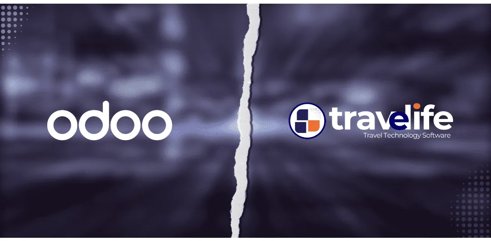

¿Software para agencia de viajes o Excel?
Excel ha ayudado a muchas agencias a empezar. Pero cuando aumentan las reservas, los proveedores y los equipos, se convierte en una fuente de errores y de tiempo perdido. Esta es una comparativa honesta, punto por punto.
Excel es gratuito y flexible, pero todo se introduce a mano: presupuestos, facturas, IVA sobre el margen, seguimiento de pagos. Un software como Travelife Manage conecta la reserva, la facturación y la contabilidad: cada operación se introduce una sola vez, el IVA sobre el margen se calcula automáticamente y el margen se ve en tiempo real.
Excel y Travelife, cara a cara
| Criterio | Con Excel | Con Travelife |
|---|---|---|
| Presupuestos y facturas | Plantillas rellenadas a mano, numeración que vigilar | Creados desde la reserva, numeración automática |
| IVA sobre el margen | Cálculo manual en cada expediente, riesgo de error | Calculado automáticamente en cada factura |
| Reservas | Billetes y hoteles introducidos de nuevo desde cada proveedor | Conectado a los GDS Amadeus, Sabre y Travelport, más de 1.500 aerolíneas y 500.000 alojamientos |
| Pagos e impagos | Columnas que actualizar, recordatorios olvidados | Pagos registrados en el expediente, impagos visibles en tiempo real |
| Contabilidad | Exportación y nueva introducción por el contable | Asientos creados al facturar, acceso en línea para el contable |
| Margen e informes | Tablas que construir, cifras a menudo incompletas | Ventas y beneficios por agente y por agencia, en tiempo real |
| Trabajo en equipo | Un archivo, varias versiones, conflictos | Varios usuarios a la vez, cada uno con su acceso |
| Acceso a distancia | Archivo en un ordenador o en una carpeta compartida | 100 % en la nube, accesible 24/7 desde la agencia o desde casa |
| Seguridad | Archivo que se puede copiar o perder, sin control de acceso | Una cuenta por usuario y autenticación de dos factores |
| Venta en línea | Imposible | Web B2C y plataforma B2B conectadas al mismo sistema |
| Facturación electrónica 2026 (Marruecos) | No cumple los requisitos de la DGI | Ya conforme a las normas de la DGI |
| Coste | Incluido en Office, pero caro en tiempo y errores | Sin comisiones sobre sus ventas, con una suscripción mensual fija |
Lo que Excel le cuesta realmente a una agencia
Las dobles entradas
El mismo cliente, el mismo billete y la misma factura se copian en varios archivos. Cada copia es una ocasión de equivocarse.
Errores de IVA sobre el margen
Una fórmula rota o una línea olvidada, y el IVA declarado es incorrecto. Una inspección fiscal no se equivoca.
Ninguna visión del margen
¿Cuánto deja realmente cada expediente, cada agente, cada mes? Con Excel, la respuesta llega tarde, si llega.
Datos frágiles
Un ordenador averiado, un archivo sobrescrito, un empleado que se va con una copia: todo el historial de la agencia está expuesto.
Cuándo basta Excel y cuándo pasar al software
Excel puede bastar si…
- gestiona pocos expedientes al mes;
- trabaja solo, sin equipo ni socios;
- no vende en línea.
Es hora de pasar al software si…
- dedica más tiempo a introducir datos que a vender;
- varias personas modifican los mismos archivos;
- no conoce su margen real antes de fin de mes;
- quiere vender en línea o a agencias asociadas;
- debe prepararse para la facturación electrónica de 2026.
Un cambio acompañado, en 3 pasos
- 1
Una demo gratuita
En 30 minutos analizamos su actividad y le mostramos el software con sus propios casos.
- 2
La migración de sus archivos Excel
Clientes, proveedores y datos útiles se trasladan a Travelife: no empieza de cero.
- 3
Formación y puesta en marcha
Sus equipos reciben formación y nuestro soporte les acompaña después del arranque.
Preguntas frecuentes
¿Un software para agencia de viajes es realmente más rentable que Excel?
Excel es gratuito, pero hace perder tiempo en cada expediente: entradas repetidas, cálculos de IVA sobre el margen, recordatorios, exportaciones para el contable. Un software como Travelife automatiza estas tareas y muestra el margen en tiempo real. Para la mayoría de las agencias, el tiempo ganado y los errores evitados superan pronto el precio de la suscripción.
¿Están mis datos más seguros en Travelife que en Excel?
Sí. Un archivo Excel puede copiarse, sobrescribirse o perderse con un ordenador. En Travelife, los datos se alojan en la nube, cada usuario tiene su propia cuenta y la autenticación de dos factores protege el acceso.
¿Puedo recuperar mis archivos Excel en Travelife?
Sí. La migración de datos forma parte de nuestro acompañamiento: sus archivos de clientes, proveedores y los datos útiles se importan para que su equipo empiece con su historial.
¿Puede Excel calcular el IVA sobre el margen?
Sí, con fórmulas, pero todo depende de introducir a mano cada expediente. Un error de fórmula o una línea olvidada basta para falsear la declaración. Travelife calcula el IVA sobre el margen automáticamente en cada factura.
¿Es Excel compatible con la facturación electrónica en Marruecos?
No. La facturación electrónica exigida por la DGI requiere facturas estructuradas y transmitidas en un formato preciso, algo que una hoja de cálculo no permite. Travelife ya cumple estas normas.
Lea también

Software y funcionalidades¿Por qué elegir Travelife en lugar de Odoo para una agencia de viajes?Leer más Software y funcionalidadesFacturación electrónica en Marruecos 2026: Travelife ya cumple las normas de la DGILeer más
Software y funcionalidadesFacturación electrónica en Marruecos 2026: Travelife ya cumple las normas de la DGILeer más  Solución TravelifeSoftware de IVA sobre el margen para agencias de viajesLeer más
Solución TravelifeSoftware de IVA sobre el margen para agencias de viajesLeer más
¿Listo para dejar Excel atrás?
Demo gratuita y personalizada de 30 minutos, con la migración de sus archivos incluida en el acompañamiento.